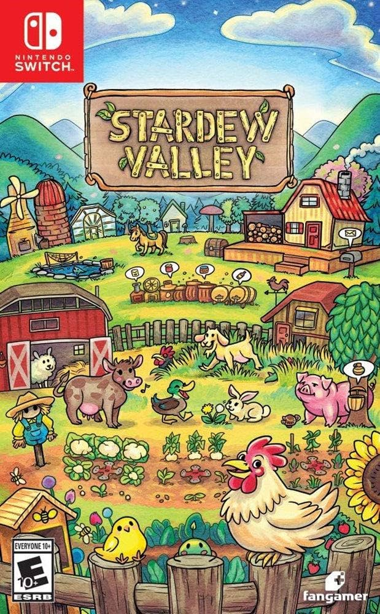
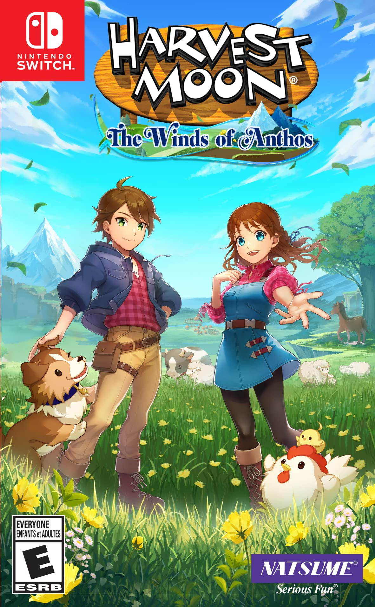
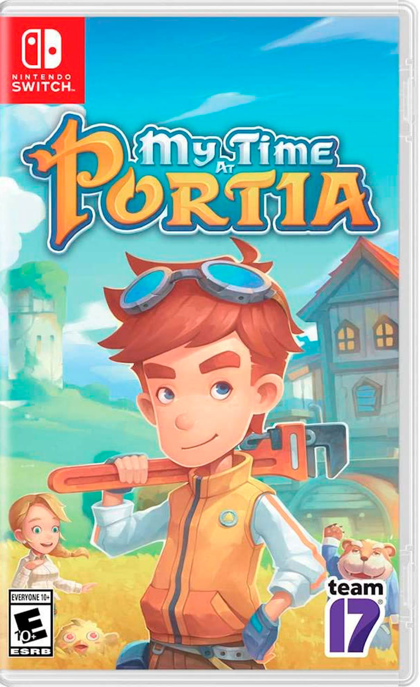

Stardew Valley
Un juego de simulación de granja donde puedes cultivar plantas, criar animales, explorar minas y crear relaciones con los habitantes del pueblo.
Ver detallesEn este sitio encontrarás un espacio dedicado a los juegos tranquilos y de estilo granja. Nuestro objetivo es compartir información, guías y recomendaciones sobre juegos que ofrecen experiencias relajantes, creativas y divertidas. Explora nuestro catálogo de juegos, descubre nuevos títulos y aprende consejos útiles para mejorar tu experiencia dentro del juego. Si te gustan los mundos tranquilos, la agricultura virtual y la exploración, este sitio es para ti.
Explorar juegos
Somos un pequeño proyecto creado por estudiantes apasionados por los videojuegos y la creatividad digital. Esta página fue desarrollada con el propósito de compartir contenido relacionado con juegos de simulación y estilo relajante. Nos inspiramos en juegos populares del género para crear un espacio donde los usuarios puedan descubrir nuevos títulos, aprender consejos y disfrutar de una comunidad con intereses similares. Nuestro objetivo es seguir mejorando el sitio agregando más contenido, funciones y recomendaciones para los jugadores.
Aquí puedes explorar diferentes juegos del género de simulación y granja. Cada juego incluye información como descripción, jugabilidad y características principales.

Un juego de simulación de granja donde puedes cultivar plantas, criar animales, explorar minas y crear relaciones con los habitantes del pueblo.
Ver detalles
Un clásico juego de agricultura donde administras tu granja, cultivas alimentos y desarrollas tu vida dentro de un pequeño pueblo rural.
Ver detalles
Un juego de simulación y aventura donde puedes construir, recolectar recursos y mejorar tu taller mientras exploras el mundo.
Ver detallesSi quieres compartir recomendaciones de juegos, sugerencias o unirte a nuestra comunidad, puedes comunicarte con nosotros usando la siguiente información.
Teléfono: 123456789
Email: correo@gmail.com
Ciudad, País